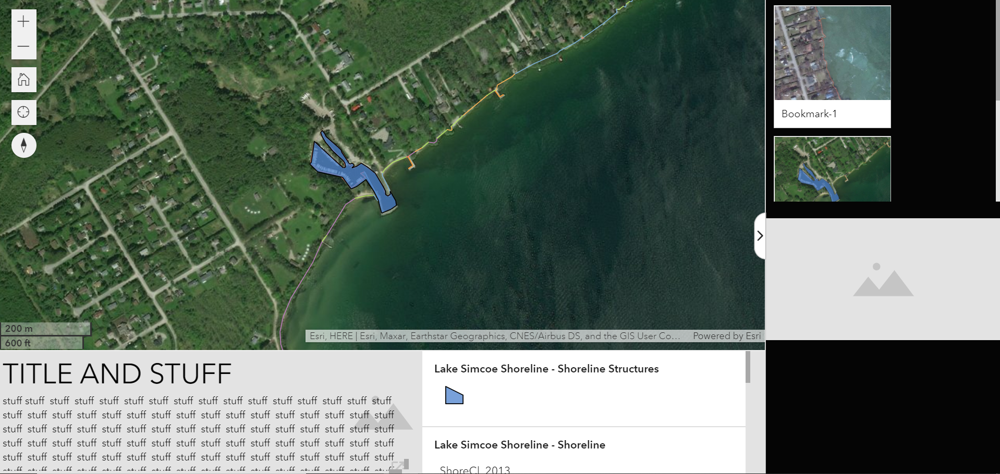
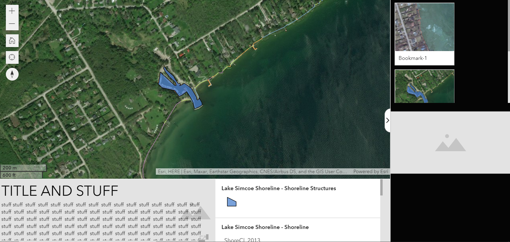

The Process
This is a fun statement about things that happened during the process. It was a good time but also a bad time.Suspendisse ultrices gravida dictum fusce ut placerat orci nulla pellentesque. Enim nec dui nunc mattis enim ut tellus elementum. Ullamcorper sit amet risus nullam. Amet cursus sit amet dictum sit. Quam vulputate dignissim suspendisse in est. At quis risus sed vulputate. Accumsan sit amet nulla facilisi. Sit amet aliquam id diam.
Data Acquisition and Software Selection
In 2013 the Ontario Ministry of Natural Resources and Forestry (OMNRF, previously OMNR) reclassified and inventoried the shoreline at Lake Simcoe. The data, along with a methodology report was published in 2015. The data and report were provided to us by Silvia Strobl (Regional Operations Division, OMNRF). The shoreline inventory data consisted of 4 feature classes: Shoreline, Shoreline Structures, Near-Shore Features, and Outfalls.
We decided to explore ESRI software for this solution as ESRI has a number of community engagement and narrative applications. These feature classes were uploaded in a geodatabase to ArcGIS online and shared as a hosted feature layer. The hosted feature layer was then opened in Map View Beta and the first iteration of a web map was developed.

ESRI Exploration and Rapid Builds
To assess the most appropriate means of communicating the necessary information to solve our problem, we explored WebApp Builder, Dashboards, StoryMaps, and Experience Builder. As our users were not the GIS community, having something completely data driven was not appropriate for our solution, thus Dashboards was eliminated. While we wanted a guide experience to help teach the public on shoreline alterations, we wanted to maintain some freedom for users to explore data as they desired, thus we eliminated StoryMaps. WebApp Builder was also eleminated as it did not have the narrative capbilities we were looking for. We selected Experience Builder as it combined the narrative aspect of Story Maps and the map-focused aspect of WebApp Builder. Another desirable aspect of Experience Builder was that it was easy to manipulate the Experience for tablet and mobile.
Using the initial webmap created for our application exploration, we each produced a rapid build Experience.
Sarah selected to use a template for her rapid build. She selected Journey which uses the bookmark widget and a map to provide an interactive tour experience. The idea was to show an overview of Lake Simcoe with an overview of the project and its importance. The user would then be taken on a tour of classifications identified in the study. The bookmark could be timed to automatically take the user on the tour and the last bookmark would explain to the user how to use the map to find their own properties and explore the area, having learned about the different shoreline features.
 

Shane chose to build a custom layout for his rapid build. He modelled his after the Journey template that Sarah used.
IMAGE
IMAGE
caption
Two Page Experience
IMAGE
TEXT
TEXT
IMAGE
TEXT
TEXT
IMAGE
TEXT
TEXT